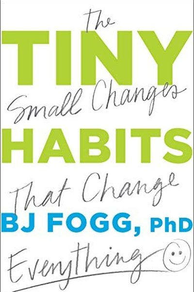

Library › Productivity
Tiny Habits — Summary & Key Lessons

The Stanford professor who designed habit science — and found that willpower is a myth.
📖 OPEN THE FULL INTERACTIVE BREAKDOWN →🌐 Read it in Hindi, Hinglish, Gujarati, Tamil & 22 more languages — free, with audio.
💡 The Big Idea
BJ Fogg ran Stanford's Persuasive Tech Lab for 20 years and created the model behind habit apps like Instagram and the iPhone. His claim: behavior = Motivation + Ability + Prompt (B=MAP), and motivation is the least reliable ingredient. The winning move is to shrink the behavior until it's trivially easy, attach it to an existing routine (the anchor), and celebrate immediately so your brain registers the win. Tiny habits compound into identity change.
🧠 The 5 Key Lessons
Lesson 1: B=MAP: Motivation Is Overrated
The Fogg Behavior Model
Every behavior happens when three things converge: Motivation, Ability and Prompt. The trap: we blame motivation when habits fail — but motivation is a wave that comes and goes. The reliable levers are Ability (make the behavior easy) and Prompt (make the trigger obvious). Design those two and even low motivation days produce the behavior.
📖 Example: Fogg's students failed to floss daily for years — until they flossed only ONE tooth after brushing. The behavior became so easy that the existing brushing prompt carried it; within months, most flossed all their teeth. Read the full example →
⚡ Do this: For your target habit, ask twice: 'How can I make this easier?' and 'What existing routine can trigger it?' Design those two levers and stop blaming motivation.
Lesson 2: Start Absurdly Small
Tiny Behaviors
Fogg's most radical rule: the behavior must be so small it feels almost pointless — two push-ups, one page, one minute of meditation. Tiny behaviors need almost no motivation, so they survive bad days, and the repetition — not the size — is what builds the neural pathway. You can always do more than the tiny version; you can never do less than zero.
📖 Example: Fogg himself wanted to floss and started with one tooth; a busy executive started a fitness habit with 'put on my running shoes' — and often ran. The shoes, not the run, was the habit that stuck. Read the full example →
⚡ Do this: Shrink your habit until you'd laugh at it: 'floss one tooth,' 'one push-up,' 'write one sentence.' Do exactly that for a week — no more.
Lesson 3: Anchors: Ride Existing Routines
Anchoring
The most reliable prompt is an existing habit — the anchor. Fogg's formula: 'After I [ANCHOR], I will [TINY BEHAVIOR].' The anchor must be precise and automatic (after I pour my morning coffee, after I sit at my desk, after I put my phone on charge at night). Anchoring removes the need to remember — the old habit pulls the new one along.
📖 Example: Fogg's students anchor brilliantly: 'After I flush the toilet, I do one squat'; 'After I start the car, I say my gratitude line'; 'After I brush my teeth at night, I read one page.' The anchor does the remembering. Read the full example →
⚡ Do this: Write 3 anchor-tiny pairs: 'After I ___, I will ___.' Use the same anchor daily — and place a physical cue at the anchor's location.
Lesson 4: Celebrate: Emotion Wires Habits
Celebration
Fogg's secret sauce: habits form not from repetition but from the emotion felt AT the moment of completion. Celebrate immediately — a fist pump, a 'Yes!', a small smile — and your brain releases dopamine, wiring the behavior in. Celebrating sounds silly, which is why almost nobody does it — and why it works.
📖 Example: Fogg's data: participants who added a genuine celebration to a tiny habit were far more likely to still be doing it months later than those who just repeated the behavior. The emotion, not the reps, was the difference. Read the full example →
⚡ Do this: Choose your celebration (fist pump + 'Yes!', or a deep breath and a smile) and do it within 3 seconds of completing your tiny habit — every single time.
Lesson 5: Shape the Environment, Not Yourself
Ability
The third lever, Ability, is about friction: the easier the behavior, the more likely it happens. Fogg's advice is to design your environment — put the guitar on the stand, the book on the pillow, the junk food out of the house — because environment beats willpower every time. Also remove friction from prompts: a visible cue beats a mental reminder.
📖 Example: Fogg installed a meditation app as the FIRST icon on his phone and put his running shoes by the door; both habits started happening without a thought. He also made 'watch TV' require effort — the remote stays in the drawer. Read the full example →
⚡ Do this: This week, do one environment redesign: make your target habit 30 seconds easier to start and your distraction 30 seconds harder.
✅ 5-Step Action Plan
- Apply B=MAP: shrink the behavior, fix the prompt, stop blaming motivation.
- Go absurdly small — one rep, one page, one minute — for a week.
- Write 3 'After I ___, I will ___' anchor pairs and pick one to run.
- Add an instant celebration to every completion.
- Redesign one environment: easier start, harder distraction.
💬 Best Quotes from Tiny Habits
- “Tiny is mighty — at least at the start.”
- “People change best by feeling good, not by feeling bad.”
- “After a behavior, an emotion — that is how habits are wired in.”
Interactive version: mark lessons as read, listen in your language, share quote cards.